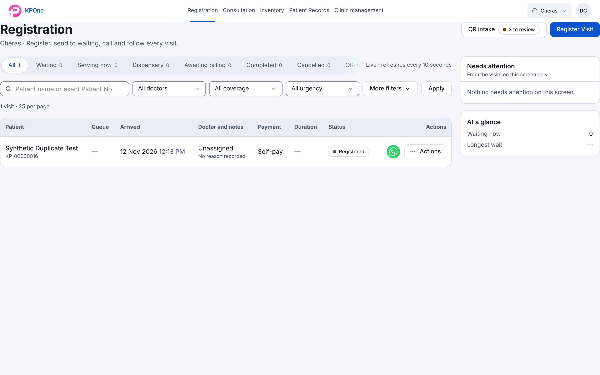
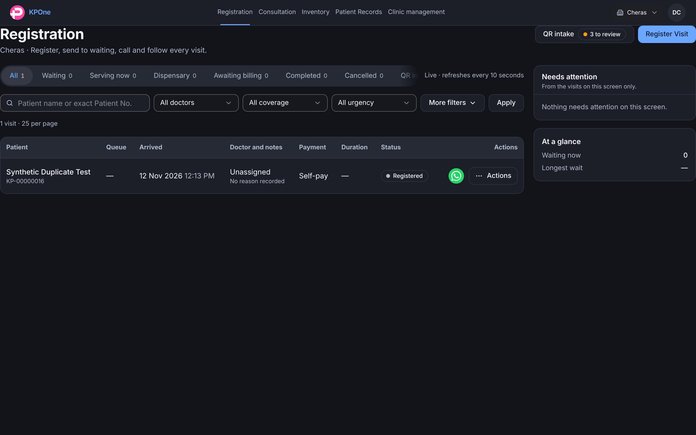
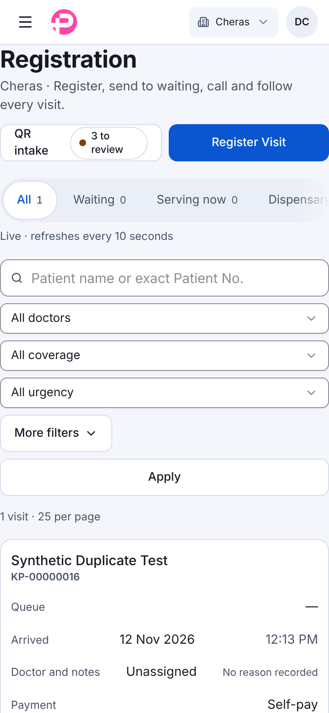
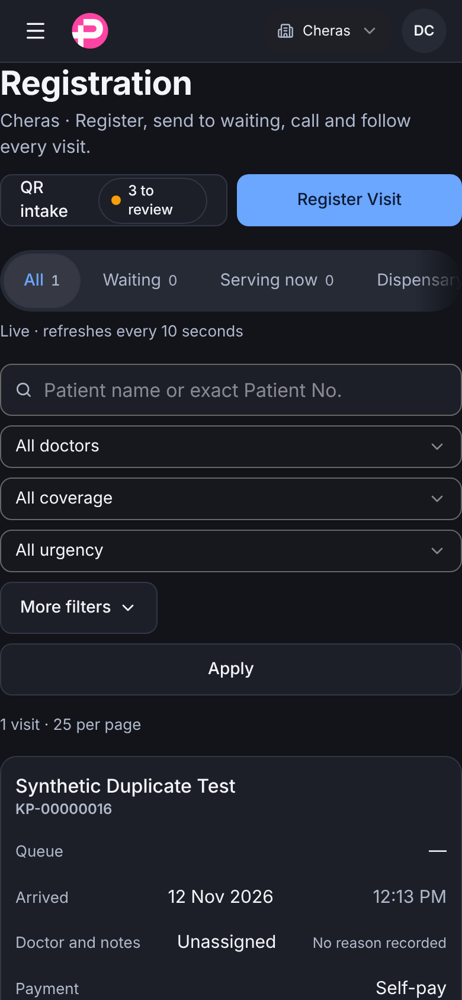

Branch feature/v2-registration-board. The V2 page is mounted in the Classic shell with the V2 look forced on (data-ui="v2"), so the page sits flush to the edges here; the V2 shell (Rashid) supplies the frame later. Synthetic data on a task-owned database: 1 visit, 3 QR intakes. Rows are in the V2Table body slot; phone cards below 1024 px. Taken before the last card-cell alignment tweak.



